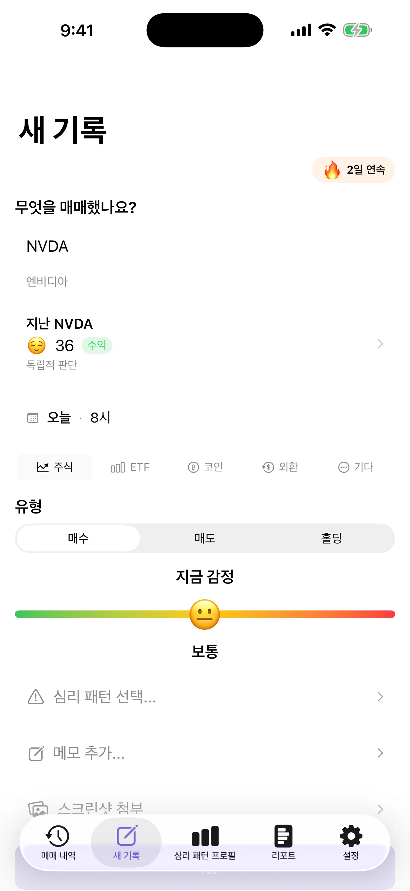
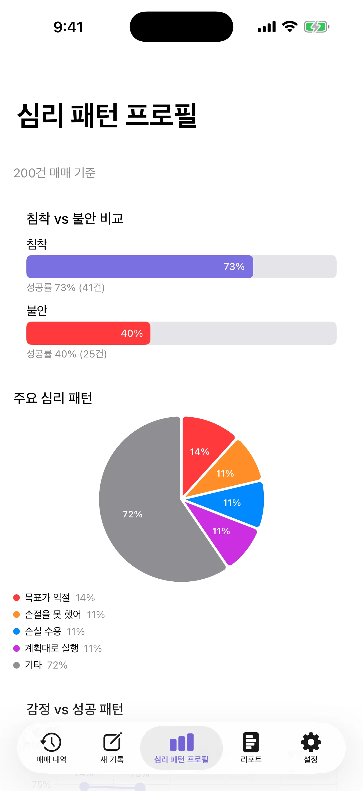
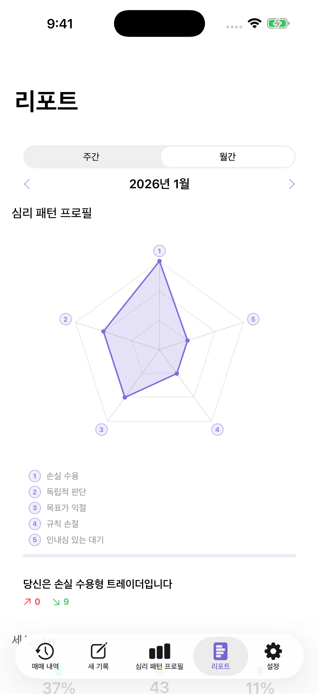
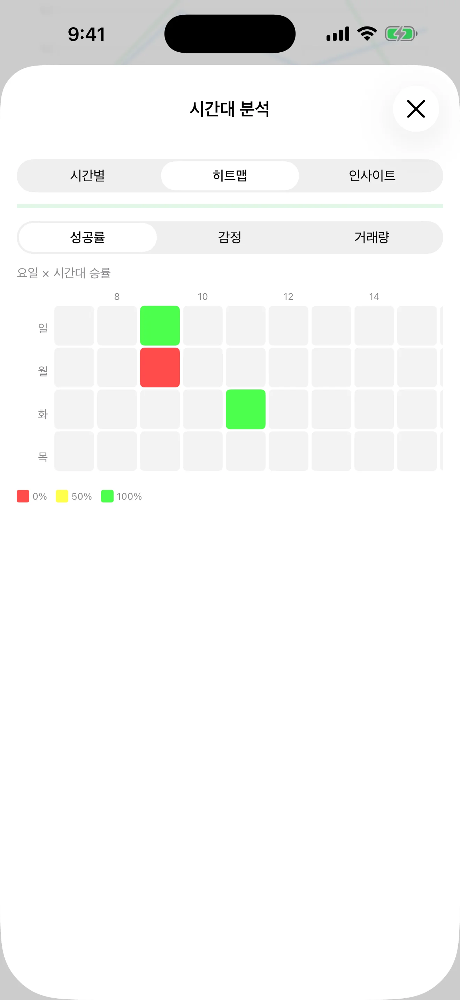

순간을 기록하세요
약 30초 만에 매매와 감정, 그때의 심리 패턴을 함께 기록하세요.
나만의 투자 심리 일지
결정 뒤에 있던 감정을 기록하고, 반복되는 패턴을 발견하며, 내 매매 데이터를 더 차분한 시선으로 돌아보세요.
App Store에서다운로드iPhone 전용 · iOS 17 이상 필요



반응을 기록하고, 차분히 돌아보기
MindTrade는 시장에서 일어난 일과 내 안에서 일어난 일을 함께 연결합니다.
약 30초 만에 매매와 감정, 그때의 심리 패턴을 함께 기록하세요.
침착할 때와 불안할 때의 결과를 비교하고, 자주 나타나는 인지 편향을 확인하세요.
요일과 시간에 따라 매매 결과와 감정이 어떻게 달라지는지 살펴보세요.
주간·월간 리포트로 다음 매매 전 나의 과정을 차분히 복기하세요.
패턴에는 시간도 있습니다
요일과 시간별 성공률, 감정, 거래량을 확인하세요. 히트맵이 긴 매매 기록을 다시 살펴볼 수 있는 하나의 선명한 신호로 바꿔줍니다.

프라이버시를 위한 설계
MindTrade는 기록과 자기 인식을 위한 도구입니다. 투자 조언을 제공하거나, 거래를 실행하거나, 증권 계좌에 접근하지 않습니다.